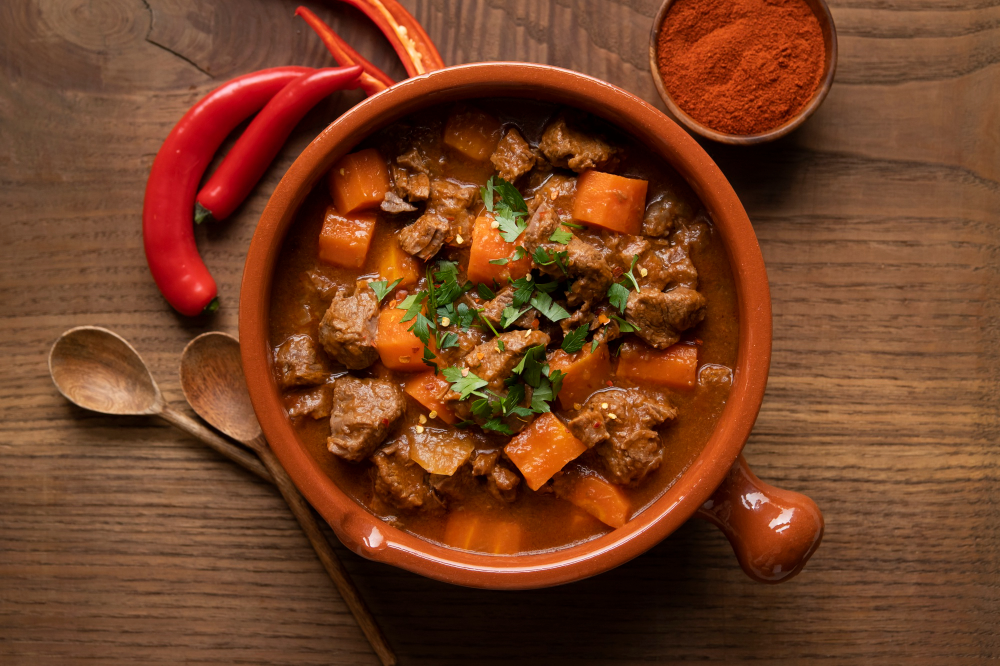

Mutton-Gravy

Description
Mutton gravy, also known as mutton curry or mutton masala, is a flavorful, spicy, and savory dish featuring tender chunks of mutton (sheep or goat meat) cooked in a rich, aromatic gravy that often includes a base of sauteed onions, tomatoes, ginger, and garlic, along with a blend of spices like turmeric, chili powder, coriander, and garam masala
Ingredients
- Mutton
- Aromatic rice(like basmati or seeraga samba)
- ghee
- onion
- tomatoes
- ginger-garlic paste
- yogurt
- cardamom
- fresh coriander
- mint leaves
Steps
- Marinate the Mutton: Mix the mutton pieces with a marinade of yogurt, ginger-garlic paste, and a blend of spices like garam masala, red chili powder, and turmeric. Let it marinate for at least a few hours or, ideally, overnight in the refrigerator to tenderize the meat.
- Parboil the Rice: In a separate pot, cook high-quality basmati rice with whole spices (like bay leaves, cardamom, and cinnamon) until it's about 70% cooked. Drain the rice and set it aside.
- Cook the Mutton: Brown sliced onions in a heavy-bottomed pot, then add the marinated mutton and cook it until it's almost tender. This creates a rich, flavorful gravy.
- Layer and "Dum" Cook: Layer the partially cooked rice on top of the mutton and gravy in the pot. Sprinkle with fried onions (birista), fresh mint and coriander leaves, and saffron-infused milk. Seal the pot tightly with a lid or dough and cook on very low heat ("dum" cooking) for 30-40 minutes. This slow cooking method allows the flavors to meld and the rice to absorb the aroma and taste of the mutton and spices.
- Rest and Serve: After cooking, turn off the heat but let the biryani rest for another 10-15 minutes before gently fluffing and serving.
Home